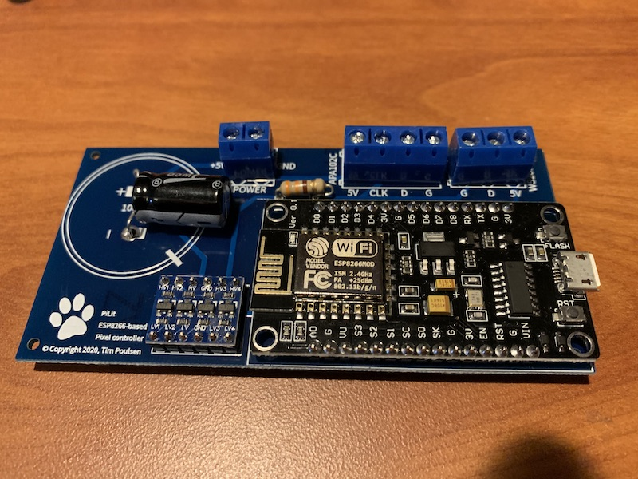
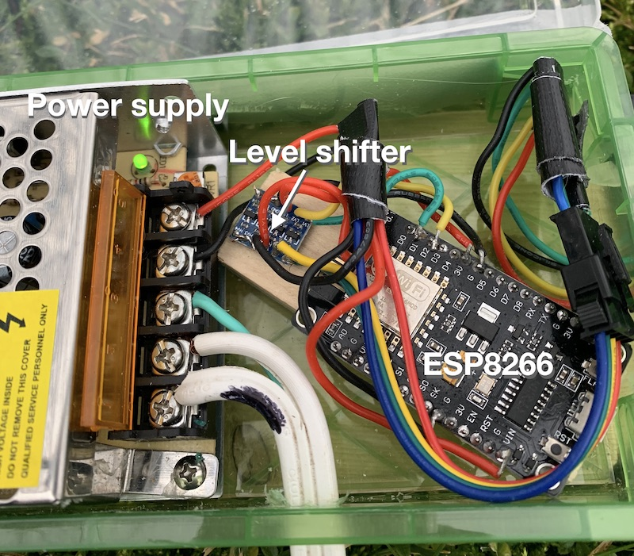
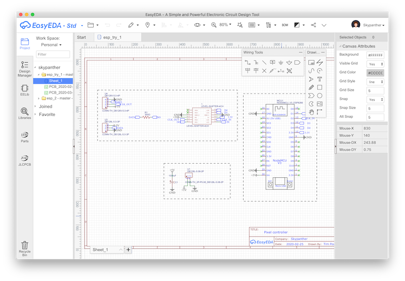
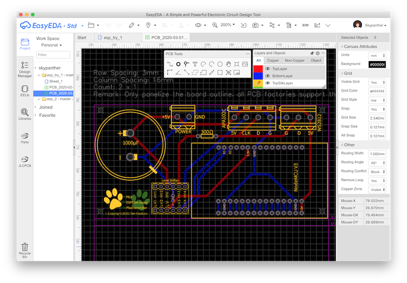
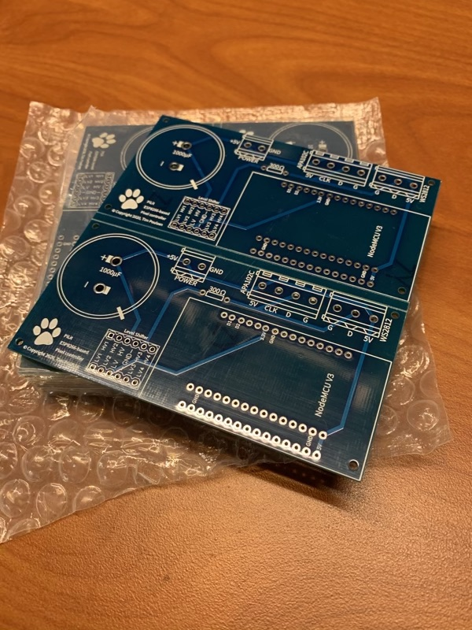
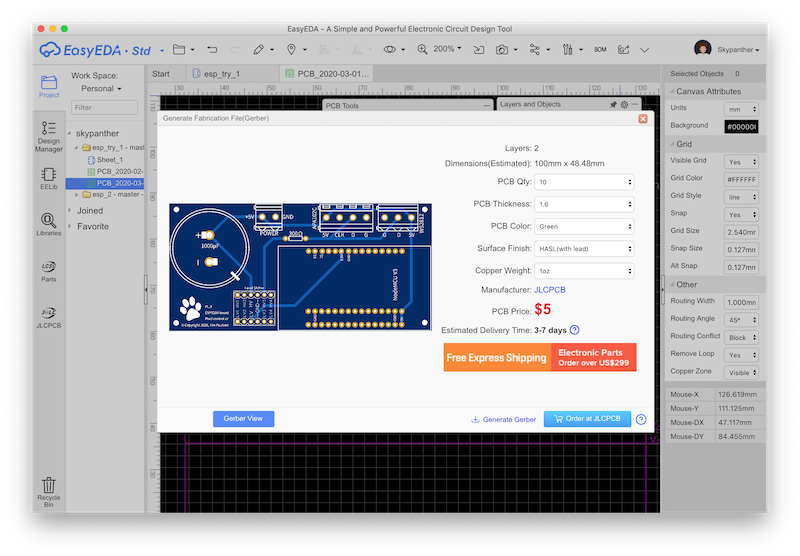
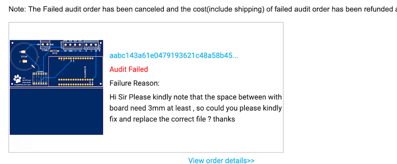
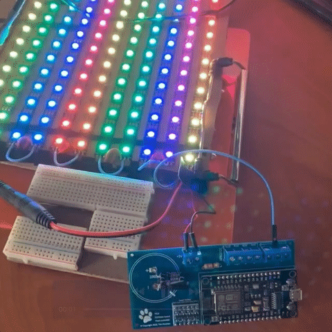

My first custom PCB
Posted on Wed 25 March 2020 in Making
I had many troubles this year with my Christmas light electronics. Solder connections went bad multiple times. Wires got snagged and tangled during setup. It was tough re-soldering connections while sitting in a snowbank with the circuit hanging by its wires from a yard decoration.
I decided I could fix these problems by using a custom printed circuit board. With a custom PCB, components would be securely soldered to the board; there would be no wires to snag or pull free; and the final product would be easier to package in a waterproof container. Of course, I've never created a PCB before.

My custom PCB with components mounted
There are quite a few PCB design apps, many of them free or free for personal use. After checking out gEDA, KiCAD, and a few others, I settled on EasyEDA. It seemed to be fairly simple to use. Conveniently, they are affiliated with a PCB prototyping company. So, right from EasyEDA, you can upload your finished file to place an order (more on that later).
Since this was my first PCB, I'm not the best person to teach how to design PCBs or even use EasyEDA. So, I'll point you to the tutorials that got me started.
- The Beginners guide to PCB design with EasyEDA Part 1 (and parts 2 and 3) YouTube videos were probably the most helpful.
- EasyEDA has some videos on their site. They vary in quality. Check them out on the EasyEDA YouTube channel
- EasyEDA also has many written tutorials that explain a lot of the terminology and back-details that you'll probably need to know. I read through many of these as the need arose.
Prototype first
It really helps to know what circuit you're going to create before you start designing your PCB. I'm sure expert circuit designers could start from scratch. But, I suggest you use a breadboard and jumpers to make sure your circuit design will work as intended before you try to turn it into a PCB. In my case, I had working prototypes of my circuit.

My pixel controller prototype
EasyEDA
This software is available as either a download or a web app. Either way, you need to create a free account on their site because all the data is stored on their systems. The bright side of this is that you can switch back and forth between the installed app and the web app without issues.
Working from your prototype, you draw your circuit using tools fairly similar to a normal drawing program. To start, you place components that you find in their library of items onto a schematic view (shown below). At this stage, you don't need to worry about arranging components as you would want them on the final PCB. Instead, you put them wherever and connect them via "net ports." These are like labeled flags specifying which parts will be electrically connected. For example, you would tag anything connected to ground with the GND net port.

Schematic view of EasyEDA
Once you have all the components on the schematic, and all your net ports defined, EasyEDA creates the PCB view. This is the stage where you arrange components in a functional manner. You want to make sure "traces" (the electrical connections) can be neatly and logically drawn. You can't have traces cross, though you can draw traces on different layers to make connections where otherwise they'd have to cross. (Traces connect from one layer to another with a "via" basically a wire between layers.)

PCB designer view of EasyEDA
The basic PCB purchase includes a two layer board. To save money, you'll want to stick to just two layers if you can. I spent a bunch of time moving components around so that my traces wouldn't need more than two layers.
There are actually more layers that come with all boards. These include the top and bottom silk layers, which is where you can add labels and drawn features that are silk screened onto your PCB. There are others too, that are part of the PCB manufacturing process and which you probably don't need to worry about, such as the top and bottom paste layers. You can see all of these in the EasyEDA PCB view.
The other cost constraint is that the cheapest board prices are for a 100mm by 100mm PCB. Conveniently, you can actually fit multiple PCBs in that space in what's called a "panelized layout." In my case, I fit all the components and traces in a roughly 50mm by 100mm area so I could get two PCBs in the allotted space. I paid for 10 PCBs, but since I got two boards in each, I ended up with 20 actual boards to play with. Note that you need to leave about 3mm dead space between the panels to allow space for the V-grooves (where the two PCBs snap apart.)

Panelized finished board
Check and check again
I spent a bunch of time checking and re-checking my layout. You can hide various layers to help focus on certain connections. For example, I'd hide all but the top-layer traces to be sure each connected the pins I needed connected. Then I'd turn on other layers and re-check. Once your PCB is fabricated, you can't change the traces. So if you get it wrong, you'll be adding jumper wires or scraping off traces to break unwanted connections.
When you're ready to go, you click an upload button which shows a screen like the following.

Export/Upload design to JLCPCB
They make the "Order at JLCPCB" button extra obvious, and it is convenient. But if you want to use a different fab house, click the inconspicuous Generate Gerber button. Gerber files are the standard that most fabricators will need to create your PCB.
In my case, I clicked that big blue order button. This uploads your gerber file to the JLCPCB web site. At that site, you choose options like board color, number to order, trace and over-solder materials to be used, and so forth. They offer a pretty generous discount price on your first order. Frankly, for a hobbyist like me, their normal prices are also quite reasonable.
The Audit
Once you've submitted your order, JLCPCB will review your circuit. They're not going to do any sort of in-depth checking of your traces or whether the PCB will function (at all, let alone how you want it to). Their audit is simply looking to confirm your PCB can be produced. In my case, my original upload failed the audit. I had panelized by design but failed to leave the required minimum space between panels. In a day or so, I got the following note:

JLCPCB's audit says I failed :(
If this happens to you, don't place a new order like I did. By doing so, you're no longer placing your "first order" and won't get that same discount. This time, instead of uploading from the EasyEDA app, export the gerber file. Then, go directly to the JLCPCB web site. There will be a "replace file" option under your failed order. Use it and re-submit. You should get the order at the original price using that method.
Their shipping options aren't great. DHL is probably your best bet. It's not particularly cheap, or fast. Still, even during the early Coronavirus/Covid-19 disruption timeframe, my order showed up in roughly two weeks.
It's Alive!
The most important thing, of course, is that the board worked as intended (well, almost). I soldered on the components — in my case, that was the NodeMCU Lolin board, a level shifter, capacitor, resistor, and three header connectors. I wired it to some NeoPixels and powered it up ... nothing. Turns out that there's nothing wrong with the board other than the resister in-line with the data out connection. I threw that in at the last minute after reading a resistor was necessary to prevent damage to the pixels. I've never used one before, and I don't think I will in the future. I soldered a shunt (wire) across the resister and it works just fine.

In use — it works!
Looking ahead
My custom PCB does exactly what I wanted it to do. Still, I may refine this board in a future order. Next time, I won't include the resistor in the design. I'll make the pin holes for the ESP8266 module larger (it was tough getting the pins through the holes) and those for the capacitor smaller (they're huuuge).
I already have other boards in mind to create — relay boards, similar boards for other chips, like the ESP32, and more. This was fun and uber-geeky to have created my own PCB.